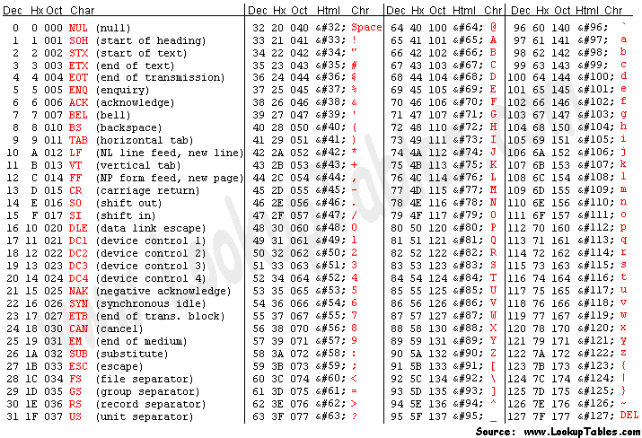
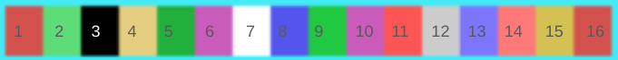

Over View

for the use of this you will be using the Oct value (each are one byte consitising of 3 bits)
when acessing memory you will use the peak and poke functions build into graphing BASIC (see graphing section of BASIC to find the rest)
BASIC
when ever yoou see # it means the line number in basic you havr to enter the line number as if it where a termial so make sure that youeneter this before anything or else it wont save the lien that you are writing
PRINTING AND VARIBLES
printing
you can do # print "hello world"
or for varibles # print var
varibles
to make a varible just put the varible type int str char bool dec then the varibles name name
then a = with the content
EXAMPLES
GRAPHING
the avaible colors for graphing are

THIS IS STILL IN DEV NOT INMPLMENTED YET
GRAPHING WITH MEMORY ADRESSES
the avilible memeory adresses, that get displayed are,
m001
m002
m003
m004
m005
m006
m007
m008
m009
m010
m011
m012
m013
m014
m015
m016
m017
m018
m019
m020
m021
m022
m023
m024
m025
m026
m027
m028
m029
m030
m031
m032
m033
m034
m035
m036
m037
m038
m039
m040
m041
m042
m043
m044
m045
m046
m047
m048
m049
m050
m051
m052
m053
m054
m055
m056
m057
m058
m059
m060
m061
m062
m063
m064
m065
m066
m067
m068
m069
m070
m071
m072
m073
m074
m075
m076
m077
m078
m079
m080
m081
m082
m083
m084
m085
m086
m087
m088
m089
m090
m091
m092
m093
m094
m095
m096
m097
m098
m099
m100
m101
m102
m103
m104
PEAK
POKE
CALL
ASM
you can save files using the save file#
there are file1, file2, file3, file4, file5, file6, file7, file8, file9
they can be saved then opened using load file#
comments and commands
comments are denoted by ;s genrally they will be formatted as show here -

since, ASM is hard to read, for the user will genrally
SIMPLE OPPERATONS
ld (load data into acc)
st (store data into registor)
add (addition add registor to acc)
sub (subtraction sub registor from acc)
gtne (if not equal, go to the line if not equal)
sbi (set bit immediate, seearchs for these firsst and then sets bits instantaly)
cbi (clears certain bit immediately)
out (output to screen adress register)
EXAMPLE
This is a program that prints hello world then the sum of 2 intigers


the output would be
HELLO WORLD919